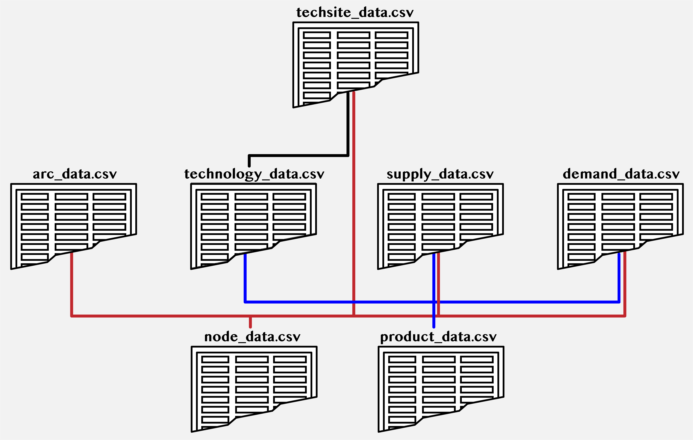
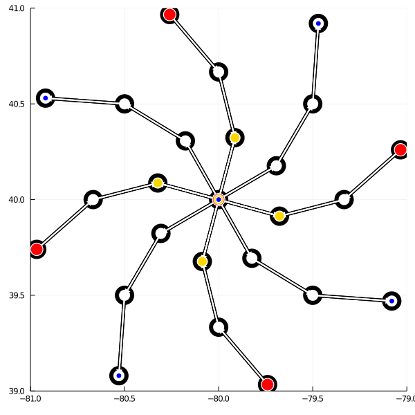

Overview
'CoordinatedSupplyChains.jl' is designed to automate data processing and model building to help you solve coordinated supply chain problems quickly and easily. The software has been designed so that your workflow will consist primarily of formatting the input data files containing the information about a supply chain problem. Once this is complete, you can point 'CoordinatedSupplyChains.jl' to your data and run the code to generate results.
Coordination Abstraction
'CoordinatedSupplyChains.jl' is based on the coordination model by Tominac & Zavala. In this work, a supply chain is conceptualized as a market operating under a coordination system managed by in Independent System Operator (ISO). Coordination proceeds much like an auction, the ISO collects bidding information from supply chain stakeholders, and determines transactions which maximize the combined total profit of all stakeholders. In this framework, every stakeholder in the supply chain is categorized into one of four classes: a supplier, a consumer, a technology (or transformation) provider, or a transportation provider. Briefly, each of these stakeholders is responsible for a specific task in a supply chain.
- Suppliers sell products
- Consumers buy products
- Technology providers convert one set of products into a different set of products
- Transportation providers move products between supply chain locations.
Each of these stakeholders is an independent profit-maximizing entity in a supply chain, meaning that it seeks to maximize its profits independently of other supply chain stakeholders. Each stakeholder has associated with it a capacity parameter indicating the extent to which it will serve in the supply chain, as well as a service bid indicating how much the stakeholder pays or demands to be paid for its service. 'CoordinatedSupplyChains.jl' tracks the profit accrued by each stakeholder. Profits are a function of supply chain allocations and prices determined by the ISO. The term allocation is used to represent the amount of a stakeholder's capacity that it wins in the coordination process.
- A supplier's allocation is the amount of a product that it is able to sell
- A consumer's allocation is the amount of a product that it is able to buy
- A technology provider's allocation is the amount of a product that is able to process
- A transportation provider's allocation is the amount of a product it is able to move
Like an auction, stakeholders can only expect to receive positive allocations if they bid competitively in the coordination system. For example, a supplier can bid no more than a consumer is willing to pay, or else there is no transaction that the ISO can set up that will generate profit. Similarly, if a consumer and supplier are separated by distance, or a consumer desires a product that must be processed by some technology provider, then the consumer must be willing to bid higher than the combined cost of all the other stakeholders' bids. Within this framework, it is logically consistent for consumers to bid a negative amount (i.e., demanding to be paid to consume a product) and for suppliers to bid a negative amount (i.e., paying to have a product taken away). However, technology and transportation providers are expected to have positive bids.
Graph Structure
'CoordinatedSupplyChains.jl' uses a graph representation for supply chains consisting of nodes (representing geographical locations) and arcs (representing available pathways between nodes). Stakeholders are connected to the supply chain by association with a graph node (in the case of suppliers, consumers, and technology providers) or association with an arc (for transportation providers). This layering of attributes informs the structure of the supply chain, and helps manage the complexity required in the input data files. The next section will show you how to structure input data.
Data Format
A coordinated supply chain problem is represented by seven files containing all the required information that 'CoordinatedSupplyChains.jl' needs to construct and solve a problem. These files have mandatory names, are all of the .csv type, and use the vertical bar ("|") character as the delimiter by default:
- product_data.csv
- node_data.csv
- arc_data.csv
- supply_data.csv
- demand_data.csv
- technology_data.csv
- techsite_data.csv
A working example will be used to illustrate how these files are structured. You can copy each of the seven files to replicate the example on your own.
product_data.csv
Data defining products is arranged as follows, with columns numbered as follows
- Product ID: a unique string ID for the product, preferably of the form P01, P02, ...; no spaces allowed!
- Product name: a string with detailed information about the product; spaces allowed
- Transportation cost: the transport cost for the product; units: (USD.tonne^-1.km^-1); >0
The demonstration example file looks like this (as raw text; a spreadsheet program will give you a different view)
# 1. Product no.|2. Product name|3. Transportation cost (USD.tonne^-1.km^-1)
P01|A|10
P02|B|10
P03|C|10
P04|D|10
P05|E|10
P06|F|10
P07|G|10
P08|H|10
P09|I|10
P10|J|10Here, you might notice that the product naming convention adopted is just alphabetical names. These might not be helpful for larger problems, but for our demo, they will be fine. Additionally, note that every product has an identical transportation cost: 10 USD per km per tonne (the spelling "tonne" is used to indicate metric tonnes). The number sign ("#") beginning the first line of the file indicates that this line is a comment, and it will not be processed as part of the code. You can leave this heading line in your own files as a reminder of the content and ordering.
node_data.csv
Node data are structured as follows
- Node ID: a unique string ID for the node, preferably of the form N01, N02, ...; no spaces allowed!
- Node Name: a string with detailed information about the node; spaces allowed
- Node longitude: A number representing the longitude of the node; e.g. Madison is -89.4012
- Node latitude: A number representing the latitude of the node; e.g. Madison is 43.0731
Our example uses the following node data
# 1. Node ID| 2. Node Name| 3. Node longitude| 4. Node latitude
N00|Node 00|-80|40
N01|Node 01|-79.91333333|40.32333333
N02|Node 02|-79.69333333|40.17666667
N03|Node 03|-79.67666667|39.91333333
N04|Node 04|-79.82333333|39.69333333
N05|Node 05|-80.08666667|39.67666667
N06|Node 06|-80.30666667|39.82333333
N07|Node 07|-80.32333333|40.08666667
N08|Node 08|-80.17666667|40.30666667
N09|Node 09|-80|40.66666667
N10|Node 10|-79.5|40.5
N11|Node 11|-79.33333333|40
N12|Node 12|-79.5|39.5
N13|Node 13|-80|39.33333333
N14|Node 14|-80.5|39.5
N15|Node 15|-80.66666667|40
N16|Node 16|-80.5|40.5
N17|Node 17|-80.26|40.96666667
N18|Node 18|-79.47|40.92
N19|Node 19|-79.03333333|40.26
N20|Node 20|-79.08|39.47
N21|Node 21|-79.74|39.03333333
N22|Node 22|-80.53|39.08
N23|Node 23|-80.96666667|39.74
N24|Node 24|-80.92|40.53You may need to careful when looking for longitude/latitude data; conventions can differ. However, CoordinatedSupplyChains.jl uses the same conventions as Google maps.
arc_data.csv
Arc data are structured as follows
- Arc ID: a unique string ID for the arc, prefereably of the form A01, A02, ...; no spaces allowed!
- Arc first node: a Node ID included in node_data.csv
- Arc second node: a Node ID included in node_data.csv
- Arc capacity: a number representing the capacity of the arc; units (tonne)
- Custom length (optional): A number representing the length of the arc; units: (km); used only if the CustomLengths parameter is set true; >=0
Our example has the following arcs
# 1. Arc ID| 2. Arc first node| 3. Arc second node| 4. Arc capacity| 5. Custom length (optional)
A01|N00|N01|100000|1
A02|N00|N02|100000|1
A03|N00|N03|100000|1
A04|N00|N04|100000|1
A05|N00|N05|100000|1
A06|N00|N06|100000|1
A07|N00|N07|100000|1
A08|N00|N08|100000|1
A09|N01|N09|100000|1
A10|N02|N10|100000|1
A11|N03|N11|100000|1
A12|N04|N12|100000|1
A13|N05|N13|100000|1
A14|N06|N14|100000|1
A15|N07|N15|100000|1
A16|N08|N16|100000|1
A17|N09|N17|100000|1
A18|N10|N18|100000|1
A19|N11|N19|100000|1
A20|N12|N20|100000|1
A21|N13|N21|100000|1
A22|N14|N22|100000|1
A23|N15|N23|100000|1
A24|N16|N24|100000|1This is the first data file that depends on another; you will notice that arcdata.csv is built based on data in nodedata.csv. Be sure that the node names entered here match those in the other file. The CustomLengths field is populated in this example, but it is not used. We could equivalently leave the field blank. Custom arcs lengths are useful if you already have access to distance data. Note that arcs only need to be defined in one direction (e.g., from node N00 to N01) and the software will add the reverse arcs automatically.
supply_data.csv
Supplier data are structured as follows
- Supply ID: a unique string ID for the supply, preferably of the form S01, S02, ...; no spaces allowed!
- Node: a Node ID included in node_data.csv
- Product: a Product ID included in product_data.csv
- Bid: a number representing the supplier bid for a product; units: (USD.tonne^-1); any real number
- Capacity: a number representing the maximum amount supplied; units (tonne); >0
- Notes: any notes about this supply instance; spaces allowed
Our example has five suppliers
# 1.Supply reference no.| 2.Node| 3.Product| 4.Bid| 5.Capacity| 6.Notes
S01|N00|P05|10.0|1000|note
S02|N17|P01|100.0|100|note
S03|N19|P02|100.0|100|note
S04|N21|P03|100.0|100|note
S05|N23|P04|100.0|100|noteNote that this file depends of both productdata.csv and nodedata.csv, and adds parameters specific to suppliers (their bid and allocation capacity).
demand_data.csv
Consumer data are structured as follows
- Demand ID: a unique string ID for the demand, prefereably of the form D01, D02, ...; no spaces allowed!
- Node: a Node ID included in node_data.csv
- Product: a Product ID included in product_data.csv
- Bid: a number representing the consumer bid for a product; units: (USD.tonne^-1); any real number
- Capacity: a number representing the maximum amount demanded; units (tonne); >0
- Notes: any notes about this demand instance; spaces allowed
Our example has five consumers
# 1. Demand reference no.| 2. Node| 3. Product| 4. Bid| 5. Capacity| 6. Notes
D01|N18|P07|10000.0|100|note
D02|N20|P08|10000.0|100|note
D03|N22|P09|10000.0|100|note
D04|N24|P10|10000.0|100|note
D05|N00|P05|10.01|100|notetechnology_data.csv
Technology data are structures as follows. Pay attention to these definitions; technology data are the most complex to set up.
- Tech ID: a unique string ID for the technology, prefereably of the form M01, M02, ...; no spaces allowed!
- Tech Outputs: a comma-delimited list of Product IDs included in product_data.csv; e.g., |P05,P06| (if single product no commas required)
- Tech Inputs: a comma-delimited list of Product IDs included in product_data.csv; e.g., |P01,P02,P04| (if single product no commas required)
- Output Yield: a comma-delimited list of yield parameters (>0) the same length as "Tech Outputs"; e.g., |0.4,0.3,0.6|
- Input Yield: a comma-delimited list of yield parameters (>0) the same length as "Tech Inputs"; e.g., |1.0,0.7,0.6| - one of these MUST be 1.0! see 6. Reference Product
- Reference product: a Product ID included in product_data.csv; this is used as the basis for the technology, and its yield coefficient in 5. Input Yield MUST be 1.0.
- Bid: a number representing the technology bid for a product; units: (USD.tonne^-1 of reference product); >0
- Capacity: a number representing the maximum amount of reference product processed; units (tonne); >0
- Name: a string with detailed information about the technology; spaces allowed
The technology data in our example are as follows
# 1. Tech ID|2. Tech Outputs|3. Tech Inputs|4. Output stoich|5. Input stoich|6. Reference product|7. Operating cost|8. Capacity|9. Name
T01|P06|P05|0.75|1.0|P05|100.0|1000|tech
T02|P07|P01,P06|0.4|1.0,0.5|P01|100.0|1000|tech
T03|P08|P02,P06|0.6|1.0,0.2|P02|100.0|1000|tech
T04|P09|P03,P06|0.5|1.0,1.3|P03|100.0|1000|tech
T05|P10|P04,P06|0.8|1.0,1.0|P04|100.0|1000|techNote that technology_data.csv embeds comma-delimited lists inside a |-delimited data file. This condenses our representation.
techsite_data.csv
Our final data file, called "techsite" is structured as follows
- Tech location ID: a unique string ID for the technology, prefereably of the form L01, L02, ...; no spaces allowed!
- Tech ID: a Technology ID included in technology_data.csv
- Node ID: a Node ID included in node_data.csv
Our example uses the following techsite entries
# 1. Tech location reference ID|2. Tech ID|3. Node ID
L01|N00|T01
L02|N01|T02
L03|N03|T03
L04|N05|T04
L05|N07|T05Technologies are defined in technologydata.csv in a general form, and are not mapped onto the supply chain. The technology-node pairs in techsitedata.csv serve this function, allowing multiple copies of a technology to be placed at different nodes without defining them in technology_data.csv; i.e., L01|T01|N01 and L02|T01|N02 creates two "copies" of T01 at nodes N01 and N02, treated as separate entities in the model. This can reduce the size and complexity of managing large numbers of technologies.
File Dependence
Many of the files reviewed in this section have dependencies on other data. The following figure outlines all the dependencies between data files. This can help you structure your own examples.

Graphical Representation
The structure we defined for coordinated supply chain models is useful for sketching network diagrams. CoordinatedSupplyChains.jl has a built-in network plot that will provide you with some feedback. The output from our example follows.

Basic Usage
CoordinatedSupplyChains.jl is built with two primary use patterns in mind: the first uses one function, and runs everything behind the scenes, returning solution data and the network plot to the user. Alternatively, the user is able to call the underlying functions directly, giving more control and access to all the intermediate data structures.
Option 1 - Everything in the Background
The fastest way to go from data to results is to use the function "Run Steady State Case" or RunSSCase().
RunSSCase(CaseDataDirectory=pwd(); PrintModel=false, WriteReport=true, PrintOutput=true, ModelOutputFileName="_Model.txt", SolutionOutputFileName="_SolutionData.txt", PrintSpacer="*"^50)As you can see, this function has many optional keyword arguments, but none of these need to be altered to run the function. The only required input is the data directory, but even this has a default value for convenience. The optional keyword arguments are as follows
- CaseDataDirectory=pwd(): the directory where the case study data are stored; the default value is the current directory where julia is running
- PrintModel=false: If true, prints the model to the julia REPL; the model is saved to a text file either way
- WriteReport=true:
CoordinatedSupplyChains.jlwrites all solution data to a file named SolutionOutputFileName, if false, skips this step - PrintOutput=true: Prints solution information to the julia REPL; if false, skips this step
- ModelOutputFileName="_Model.txt": The default name where the model file is stored
- SolutionOutputFileName="_SolutionData.txt: The default name where the solution file is stored
- PrintSpacer="*"^50: A series of characters used to format printing, defaults to fifty asterisks.
As you can see, the majority of these are stylistic. The simplest way to use CoordinatedSupplyChains.jl is to change your directory to the location of your case study and call the function with no arguments. This might look like:
$ cd Documents/CaseStudies/Case01On a Mac or Linux based terminal, this will change your directory to a folder called Case01 where the case study data are stored. From here, start julia in your terminal, and load CoordinatedCupplyChains.jl.
julia> using CoordinatedSupplyChainsWith this setup, type
julia> RunSSCase()What for the confirmation messages to let you know that the function has run, and everything is complete. CoordinatedCupplyChains.jl will create any additional folders required for solution data if they aren't already in the directory.
Option 2 - More Control
If you would like to have more control over the series of function calls (e.g., ability to view intermediate data, or generate new cases on the fly) you can call a series of functions to replicate the behavior of RunSSCase().
Once again, start julia and load CoordinatedCupplyChains.jl.
julia> using CoordinatedSupplyChainsThe first of function you'll need is LoadSSCaseData(), which will pull in case study data and built the required data structures.
A,N,P,D,S,T,L,Sets,Pars = LoadSSCaseData(CaseDataDirectory=pwd(); CustomLengths=false, PrintSpacer="*"^50);Once again, you can either point the function to a directory or, or let the function use the current directory. Case data are returned as structures with fields. A structure field is accessed using the the structurename.structurefield notation. For example, A.ID returns the list of arc IDs. The outputs are as follows
- A: structure containing arc data, with fields
- ID::Array: array of arc IDs
- node_s::Dict: starting node
- node_r::Dict: receiving node
- cap::Dict: arc capacity
- len::Dict: arc length, either calculated (by default) or custom, depending on CustomLengths- N: structure containing node data, with fields
- ID::Array: array of node IDs
- alias::Dict: node names
- lon::Dict: node longitudes
- lat::Dict: node latitudes- P: structure containing product data, with fields
- ID::Array: array of product IDs
- alias::Dict: product names
- transport_cost::Dict: product transport costs- D: structure containing consumer data, with fields
- ID::Array: array of consumer IDs
- node::Dict: consumer nodes
- prod::Dict: consumer products
- bid::Dict: consumer bids
- cap::Dict: consumer capacities- S: structure containing supplier data, with fields
- ID::Array: array of supplier IDs
- node::Dict: supplier nodes
- prod::Dict: supplier products
- bid::Dict: supplier bids
- cap::Dict: supplier capacities- T: structure containing technology data, with fields
- ID::Array: array of technology IDs
- Outputs::Dict: products produced by a technology
- Inputs::Dict: products consumed by a technology
- OutputYields::Dict: yield coefficients corresponding to Outputs
- InputYields::Dict: yield coefficients corresponding to Inputs
- InputRef::Dict: technology reference product
- bid::Dict: technology bid
- cap::Dict: technology capacity
- alias::Dict: technology name (or other info)- L: structure containing technology site data, with fields
- ID::Array: array of IDs for tech-site pairs
- node::Dict: tech-site node
- tech::Dict: tech-site tech- Sets: structure containing sets required in the optimization model
- Ain::Dict: all arcs entering a node
- Aout::Dict: all arcs leaving a node
- TPQ::Array: valid [t,p,q] combinations
- NQT::Dict: valid [n,q,t] combinations, keyed to [n,q,t]
- NPt::Dict: technologies at node n producing product p keyed to [n,p]
- NQt::Dict: technologies at node n consuming product q keyed to [n,q]- Pars: structure containing parameters required in the optimization model
- dMAX::Dict: maximum consumer allocation
- sMAX::Dict: maximum supplier allocation
- α::Dict: yield coefficients
- ξgenMAX::Dict: maximum technology production allocations
- ξconMAX::Dict: maximum technology consumption allocations
- fMAX::Dict: maximum transportation allocationsThis data is fed into the second function, OptimizeSSCase(), which builds and solves the coordination model. Model outputs and statistics are returned to the user. Note that the arguments CaseDataDirectory and after are optional, and have already been described.
Output, Stats = OptimizeSSCase(A,N,P,D,S,T,L,Sets,Pars;
CaseDataDirectory=CaseDataDirectory,
PrintModel=PrintModel,
WriteReport=WriteReport,
PrintOutput=PrintOutput,
ModelOutputFileName=ModelOutputFileName,
SolutionOutputFileName=SolutionOutputFileName,
PrintSpacer=PrintSpacer);The return values are Output and Stats; structures containing fields with information about the model. These are defined as follows
- Output: structure containing solution data
- z::Float64: objective value
- si::JuMP.Containers.DenseAxisArray: supply allocations; indexed like a Dict() object
- dj::JuMP.Containers.DenseAxisArray: demand allocations; indexed like a Dict() object
- snp::JuMP.Containers.DenseAxisArray: nodal supply allocations; indexed like a Dict() object
- dnp::JuMP.Containers.DenseAxisArray: nodal demand allocations; indexed like a Dict() object
- f::JuMP.Containers.DenseAxisArray: transport allocations; indexed like a Dict() object
- ξcon::JuMP.Containers.DenseAxisArray: technology consumption allocations; indexed like a Dict() object
- ξgen::JuMP.Containers.DenseAxisArray: technology generation allocations; indexed like a Dict() object
- πNP::JuMP.Containers.DenseAxisArray: nodal prices; indexed like a Dict() object
- πA::Dict: transport prices
- πT::Dict: technology prices
- Φd::Dict: consumer profits
- Φs::Dict: supplier profits
- Φf::Dict: transport provider profits
- Φξ::Dict: technology provider profits- Stats: structure containing model statistics
- NumVars::Float64: number of variables
- TotalIneqCons::Float64: total inequality constraints
- TotalEqCons::Float64: total equality constraints
- NumVarBounds::Float64: number of variable bounds
- ModelIneqCons::Float64: model inequality constraints
- ModelEqCons::Float64: model equality constraintsHaving solved the model, outputs can be saved to individual .csv files using SSRecordMaker(). This function does not return anything to the user.
SSRecordMaker(A,N,P,D,S,T,L,Output,Stats;
CaseDataDirectory=CaseDataDirectory,
PrintSpacer=PrintSpacer);Similarly, a network plot is produced by a call to SSNetworkPlot(). Note that only the flow values from Output (i.e., Output.f) are required in this function. Attempting to pass Output as a whole will fail.
SSNetworkPlot(A,N,P,D,S,L,Output.f;
CaseDataDirectory=CaseDataDirectory,
PrintSpacer=PrintSpacer);